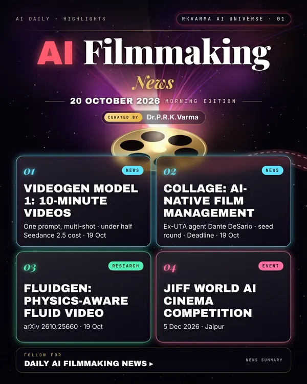

Latest updates · 20 October 2026
In the full issue →AI video is moving from clips to whole productions: VideoGen has launched a model that turns one prompt into a multi-shot film of up to ten minutes, and a former UTA agent has opened a management firm just for AI-native studios.
Research, industry & policy
- VideoGen unveils Model 1 for ten-minute videos, AI Affairs · 19 Oct 2026: VideoGen's first in-house model turns a single prompt into a finished multi-shot video up to ten minutes long. Chief executive Anton Koenig says it sits slightly below ByteDance's Seedance 2.5 in quality and will cost less than half as much.
- Collage launches as a management firm for AI-native production, Deadline · 19 Oct 2026: Former UTA film agent Dante DeSario and media investor Michael Lambert have launched Collage and closed a seed round, with Black Bear and Fundamental Films investing.
Journals & preprints
- FluidGen: Physics-Aware Fluid Video Generation via Motion-Guided Post-Training, arXiv 2610.25660 · 19 Oct 2026: Video generation models produce visually compelling motion but systematically fail on fluid phenomena, including smoke, fire, and explosion debris, where outputs lack coherent vortical structure and…
- Clean Forcing: Drift-Resistant Autoregressive Video Diffusion with a Frozen Base, arXiv 2610.25634 · 19 Oct 2026: Autoregressive (AR) video diffusion models generate streaming video of arbitrary length by conditioning each new chunk of frames on those already generated.
Conferences, workshops & events
- JIFF 1st World AI Cinema Competition – final entry deadline, 5 Dec 2026 · Jaipur: Final submission deadline (extended deadline 15 Nov); JIFF runs 8–12 Jan 2027.
- IndiaJoy AI Film Festival & AI Conclave, 7–13 Dec 2026 · Hyderabad (Bharat Future City): Stories, tools and talent shaping the next era of cinema.
- PIFFI 2026 – People's International Film Festival of India, 17–20 Dec 2026 · Bhopal: 1st edition, with an AI-Assisted Films category.
Why it matters
Longer, cheaper generated video and dedicated talent management show AI filmmaking turning into an industry with its own deal-making layer.

